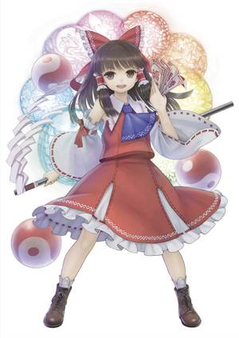

本文介绍的是：博丽灵梦 - 新作角色。博丽的巫女，无拘无束的人类。
博丽灵梦（旧作角色） - 旧作官方角色
博丽灵梦（西方） - 西方系列作品角色
博丽灵梦（武勇录）- 二次同人角色
目录
1 角色信息
1.1 角色介绍
1.2 官作出场记录
基本信息 人物名 博丽灵梦 日文名 博麗 霊夢（はくれい れいむ） 英文名 Hakurei Reimu 种族 人类 职业 巫女 能力 操纵灵气程度的能力（红魔乡） 飞翔于空中程度的能力（红魔乡、求闻史纪、人妖名鉴、幻存神签） 主要拥有飞翔于空中程度的能力（妖妖梦、永夜抄、花映塚、风神录、地灵殿、星莲船、神灵庙、辉针城、绀珠传、天空璋、鬼形兽、虹龙洞、锦上京

博丽灵梦是东方Project系列的第一主角，也是东方系列的代表角色。初登场作品为东方灵异传，担任灵异传的自机；新作初登场作品为东方红魔乡，担任红魔乡的自机。 她是博丽巫女，通称红白[红魔乡设定文档]。 所有官方游戏整数作的标题画面都是灵梦。同样地，官方漫画里灵梦也均会在封面与第一话登场。 每当有人问及ZUN最喜欢或对他最特别的东方角色时，他总是会提起灵梦[亚特兰大AWA座谈会、洛杉矶AX座谈会、幻想巡礼]。 ZUN在参加第一次东方人气投票角色部分时（2003年），将他的第一枚角色票投给了灵梦[ZUN的人气投票记录]。 在世界范围以及中文社群中，灵梦是认知度最广、二次创作最多的东方角色。 她性格非常悠闲，缺乏危机感，对谁都既不亲切也不严厉地平等相待，但在工作上对妖怪是不问情由一律降伏的[史纪]，常常一个人独处，实际上也说不定是个冷漠的人[永夜抄设定文档]，不过有时候也会不分种族地去亲近别人[永夜抄Manual]，实际上其实感情丰富[绯想天角色介绍]。她思想非常单纯，表里如一[萃梦想设定文档]，但也满脑子是春，并且因为不相信努力会得到回报而讨厌修行和全力以赴[妖妖梦Manual]。 从灵异传开始，灵梦一直作为大部分官方游戏可使用的自机角色登场，在所有官方出版物中也都是主角或常驻角色。她贯穿了东方系列的整个故事线，是东方剧情中最重要的角色之一。 只有外传性质的官方游戏没有将灵梦作为可选自机。 在对战类官方作品中，她一般在幕后黑手的剧情线中作为最终敌人登场（东方凭依华、东方刚欲异闻除外）。
灵梦是位于幻想乡内的神社——博丽神社的现任巫女，也是历代巫女中最缺乏危机感的一位[史纪]。 她平日居住在博丽神社中，在有工作或异变发生时也会出现在幻想乡内的各个地方乃至幻想乡外的世界中。 作为博丽巫女，她以解决异变为主要工作内容[史纪]，以降伏妖怪等敌人为主。此外，她拥有丰富的与妖怪相关的知识，作为这方面的专家，她也会帮助解决一些与妖怪相关的问题[铃奈庵18话]，而非像普通的巫女一样单纯地侍奉神明或经营神社，甚至很少发挥巫女该有的作用[妖妖梦Manual]。 灵梦自称巫女是自己天生的工作，就算解决了异变也没有报酬。[新香霖堂9话] 不过在永夜异变中，灵梦也曾向八云紫提出要很高的报酬，并被紫答应。[永夜抄] 没有异变的时候，灵梦则一般会边注视着幻想乡的天空边喝着茶水，这就是她每日的习惯[妖妖梦]。 由于博丽神社所在的位置距离幻想乡内人类的聚集地人类村落比较远，在新雪上走需要一个小时左右[茨歌仙38话]，加上路途中有着险恶的妖怪兽道和上坡路，因此参拜客不多[史纪]。 灵梦经常会想出各种手段以吸引参拜客[茨歌仙]，但是常常以失败告终。 由于博丽神社缺乏赛钱乃至没有存放现金（斯塔萨菲雅会将自己没偷过钱的原因归结为只去神社偷东西）[三月精S18话]，以及灵梦本身的贪财[萃梦想、茨歌仙]，加上灵梦偶尔为了招揽参拜客而不顾客人的安危[地灵殿、醉蝶华28话]，在二次创作中普遍将灵梦设置为贫穷并且为了钱财不择手段的无节操形象。然而，她的贪财并非沾染俗气，而是单纯、忠于欲望的表现[茨歌仙5话]。
灵梦主要拥有飞翔于空中程度的能力，不管是地球的重力，还是任何的重负，或者由于力量差造成的威胁，这一切对于她而言都是无意义的[永夜抄Manual]。 她能够摆脱重力，自由飞翔于空中。 她不被任何事物束缚。 这一点可能表现为，她能够挑战并战胜比自己强大的对手。 此外，她还拥有博丽巫女的能力。 虽然她是神道教的巫女，但是她的能力与技能，则主要以中国的道教的形式展现[神灵庙采访]。 灵梦擅长发现空间的间隙，利用其创造结界[GoM]。 运用这一点，可以创造出没有界线的、循环的空间，或是用于瞬间移动。 她自称瞬间穿越空间的界线是自己的专利。[交叉评论] 她曾直接在空间中创造出了间隙来追踪八云紫。[铃奈庵51话] 格斗作中，灵梦还拥有和紫相同的技能结界「人至之处的青山」。 灵梦还拥有操纵灵气程度的能力[红魔乡设定文档]。 这可能源于旧作灵梦“天生具有灵力”的设定。 也可能是因为这一点，在东方心绮楼中，她拥有比别的角色更长的灵气槽。 灵梦拥有超乎常人的幸运，她的直觉几乎一定会命中。 她所预测的骰子点数一定是正确的[香霖堂27话]。 她即使看不到脚下的河流也会因为踩到了偶然跃起的鱼而免于落水[三月精E2话]。 丰聪耳神子认为，灵梦极强的运势源于她无意识地借用了神灵的运势。[醉蝶华53话] 作为巫女，灵梦可以看见、听见一般人看不见、听不见的神明[茨歌仙23话]、或是与神灵对话[铃奈庵27话]。 她曾拜托闲着的伴山男充当疫病的祟神（疾病之神），并让他寄宿在了无名的壶碎片上来驱除传染病。[香霖堂] 她还曾拜托金山彦命制造合金，过程中灵梦能与金山彦命对话，并在金山彦命做好后能获得成品。[茨歌仙] 通过这项能力，她还可以获得神明知道的信息。 在寻找失踪的本居小铃时，灵梦直接通过询问神灵的方式得到了线索。[铃奈庵45话] 经过训练后，她能召唤神明寄宿在自己身上。 紫指导灵梦修炼通过月之民认为不正当的手续[儚月抄小说6话]召唤神明附体、获得神明的性格[儚月抄漫画6话]从而借助神明力量的方法，这番举动在月之都掀起了混乱[儚月抄小说最终话]。 灵梦也会依靠降神的方法解决问题，或是用于战斗。如以住吉三神运行火箭[儚月抄漫画5话]、以大祸津日神抛出带着污秽的符札[儚月抄漫画17话]等等。 除了神明，灵梦还可以将被封印或寄宿于物品上的怨灵降灵，从而将其再次封印或降伏。[铃奈庵、醉蝶华] 不论是体术还是妖术，灵梦都有点修行不足（或者说根本没有），但是这不妨碍她非常地强。[萃梦想设定文档] 尽管如此，修行不足还是导致灵梦使用力量的方式不太对。[儚月抄漫画17话]
灵梦身高是十多岁的样子，属于身长较高的角色[ZUN的邮件答复]，同时她当时的年龄也和外形一致[幻想揭示板]。 虽然东方新作的时间跨度已有二十余年，但是包括灵梦在内，东方中人类角色们的外貌都没有年龄增长的痕迹。ZUN对此的解释为“海螺小姐时空1[东方的黎明、北大演讲会]”。但是与“海螺小姐时空”不同的是，幻想乡的时间是切实以与外面世界相同的速度流动的[三月精S番外篇]，所以也有一种猜想认为幻想乡内的体感时间和老化速度都比外面世界更慢[茨歌仙第19话]。 她有着一头黑发，有些作品中会偏棕色，长度从及肩到及腰不定，脑后系着巨大红色蝴蝶结，两鬓有两束发髻扎在红白色装饰的束发带中，束发带的造型会随作品而改变。 她的眼瞳在多数作品中为黑色或棕色，在少数作品中则为红色。 她身穿红色调的改良版巫女服，巫女服由红色和白色两种布料构成，这就是她被称为红白巫女的原因。在胸前，她一般会系着一个红色、黄色、紫色或蓝色的领结。巫女服的白色宽大袖子与上衣在肩膀处分离，在袖子的顶部以束带固定于上臂。巫女服的下身为红色及膝裙，裙摆边缘为荷叶边，裙摆下方有白色图案，随作品变化。 她脚穿白色的足袋、短袜或三折袜，在大部分作品中穿鞋，样式为玛丽珍鞋或乐福鞋或长靴。 她手持武器驱魔棒作为降伏妖怪的重要道具，其长度会随作品变化，趋势是越来越长，红魔乡时只有小臂长，绀珠传之后的作品中普遍超过灵梦身高。 灵梦的2P色将红色改为蓝色，将紫色领带改为黄色。这种配色被称为青灵梦，是比较热门的二次创作主题。
灵梦作为巫女工作所使用的道具和服装，均由旧货店香霖堂提供[香霖堂]。 此外，她还会拜托多多良小伞打造封魔针[茨歌仙27话]，常用武器阴阳玉则是由玉造魅须丸打造的[虹龙洞]。 雾雨魔理沙曾说灵梦曾经是个弃儿[香霖堂]，不过有开玩笑的可能。 魔理沙、八云紫、茨木华扇、东风谷早苗等角色经常来访博丽神社，并为灵梦带来各种各样的食品或道具[茨歌仙]。 光之三妖精桑尼米尔克、露娜切露德、斯塔萨菲雅经常对灵梦进行恶作剧，并且在之前居住的树木被雷劈死后[三月精S第21话]之后，搬到了博丽神社后院的大树上定居。 在东方辉针城之后，少名针妙丸曾经在博丽神社寄居了一段时间[辉针城、铃奈庵]；在东方天空璋之后，高丽野阿吽也常驻于博丽神社。 基于对旧作的捏它，ZUN将旧作角色玄爷安置在了博丽神社后院的池塘里[东方的黎明]。 灵梦解决异变时，会遭遇到各式各样的妖怪和人类，有的时候会发生战斗，有的时候则会互相协助。 例如在东方永夜抄和东方凭依华里她与紫组合；在东方地灵殿里，紫、射命丸文、伊吹萃香都为她提供过协助；在东方凭依华里她与华扇结成组合。 因此灵梦结下了许多不解之缘。虽然人类村落的村民们对博丽神社兴致寥寥，但是妖怪们都非常喜欢灵梦[求闻史纪、地灵殿Manual]，经常会来神社找灵梦玩耍。但灵梦并不希望妖怪们在平时来到神社，认为是她们让人类村落的居民不敢来神社参拜，并让神社被称为“妖怪神社”[东方茨歌仙]。 作为维持幻想乡秩序的巫女，灵梦也经常前往人类村落执行任务或维持治安[铃奈庵]。 人类村落中的居民十分尊敬博丽巫女，并且也会配合她的工作。甚至因幡天为还能冒充神社工作人员骗到钱[文花帖]。 由于灵梦丰富的人际关系，在二次创作中，以灵梦和他人的关系为基础展开的创作类型十分兴盛。
灵梦平日里待在博丽神社，日常就是打扫神社，没有特别的事情要做。 四季异变后，打扫神社的工作往往由高丽野阿吽承担。[醉蝶华] 每当有外来人误入幻想乡时，一般都是由灵梦将其送出幻想乡。 此外，在每年的年初等重要时间点，灵梦需要举行仪式，以维持幻想乡接下来的平衡[三月精S15话]。 虽然灵梦的工作之一是守护博丽大结界，但是灵梦对于大结界本身的机理并不十分了解，甚至还会做出无益的行为[三月精S25话]。 每当幻想乡发生异变时，灵梦都会一马当先出发去解决异变，维持幻想乡的秩序和运转。 灵梦的观察力很敏锐，她的直觉总是能准确命中，因此常常被认为拥有犯规一般的幸运[香霖堂27话]，总能察觉到事件的线索与幕后黑手。 她的实力很强劲，在幻想乡内少有对手。 遭遇更强甚至无法战胜的敌人时，也能够通过符卡规则或运气化解。 灵梦并不经常做一般巫女的职责工作，对于博丽神社侍奉的神明是谁都不了解，对于神社的神明本身快消失了都不关心[香霖堂25话]。 八云紫经常会关照博丽神社的运作，除了帮助灵梦解决异变[永夜抄、凭依华]，在灵梦犯下失误时，也会出面提醒并善后[茨歌仙15话]，还教导过灵梦如何降神[儚月抄]。 然而灵梦捉摸不透紫的本意，因而不擅长与她相处。 仙人茨木华扇经常来博丽神社指导灵梦的修行，对她种种散漫的行为多加说教，甚至曾强行带走灵梦进行魔鬼训练[茨歌仙]，然而灵梦并没有什么长进。 事实上，灵梦随着作品的发展变化却一点点也没成长[人妖名鉴]。 灵梦经常会在博丽神社举办各式各样的活动，尤其以宴会和祭典为主。 在举办宴会的时候，灵梦通常会召集幻想乡各地的妖怪和人类聚集在博丽神社，或是赏樱或是分享酒食。 不过这些食物大都是由前来参加宴会的人提供或制作（例如十六夜咲夜），灵梦偶尔也会下厨做饭，以素菜为主。 博丽神社在前期从未举行过热闹的祭典[三月精O]，但是在经历了光之三妖精召集的除夕活动和宗教战争后，尤其是在宗教战争时的祭典中尝到甜头后[茨歌仙]，为了增加神社的人气和赛钱收入，灵梦开始热衷于在博丽神社举办祭典活动并通过设置大量小摊吸引参拜客。而且，她经常会因为灵光一闪而不计后果地召开祭典，但是几乎都没能赚到钱。[茨歌仙] 在祭典过程中，河城荷取为首的河童、米斯蒂娅·萝蕾拉等其他妖怪以及光之三妖精等妖精，经常会积极地协助灵梦并设置祭典的摊位，通常她们都会赚到比灵梦更多的钱。 为了增加博丽神社的人气，灵梦经常会试图与信仰上的竞争对手（如守矢神社、命莲寺）进行竞争。 即便如此，守矢神社的早苗，在前来博丽神社打扫守矢神社的分社之余，也会替灵梦照料神社[茨歌仙38话]。 灵梦经常受到大家的照顾，一会儿十分可靠，一会儿又非常靠不住。 在不同的官方作品里，她的表现甚至大相径庭。ZUN对此评论：灵梦究竟在想些什么其实我并不明白，根据作品的不同她的立场也会转变，以不同角色的角度来看灵梦也一直在变化。人类眼中的灵梦、妖精眼中的灵梦、妖怪眼中的灵梦均不尽相同。[人妖名鉴] 在一些二次创作中，她也经常会扮演卖蠢卖惨的角色类型（如颜艺、吃土）。 此外，灵梦时刻监视着人类村落的村民，如果有居民试图成为妖怪，她会尽力阻止；如果无可挽回，她会将其消灭。[铃奈庵37话] 至今为止，灵梦仍然在东方的作品中，作为主角（英雄）而活跃着。 在原作者ZUN的概念里，灵梦与努力家主角魔理沙相对，是不需要努力就可以获得成功的类型。 因此，在一些二次创作中，灵梦会是一副冷静、深藏不露的样子，并且是战无不胜的存在。
官作出场记录
角色登场标准
黑色：表示该角色在此处作为主要角色登场
灰色：表示该角色在此处仅作为背景登场
暗灰：表示该角色在此处并未实际登场